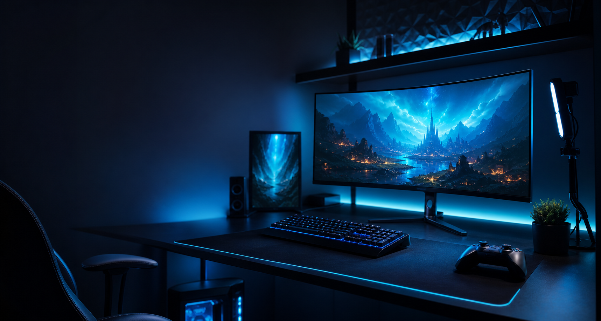

Игровой канал, длинные прохождения, стримы
FEDOT
Прохожу игры полностью, без спешки и без привязки к жанрам. На канале - мой полный путь по игре: длинные ролики, живые стримы и возможность сыграть вместе через Discord.
Обо мне
Прохождения как личное приключение
Я играю в игры ради удовольствия и стараюсь проходить их полностью: исследовать, ошибаться, находить свои маршруты и показывать весь путь, а не только лучшие моменты.
Формат канала - длинные видео с полноценным прохождением и стримы на YouTube. Если ты тоже любишь игры, можно добавиться в Discord: иногда играем вместе с подписчиками.
Longplay
Полный путь по игре
Streams
Живые эфиры на YouTube
Community
Совместные игры через Discord
Где найти
Все площадки в одном месте
Последние видео